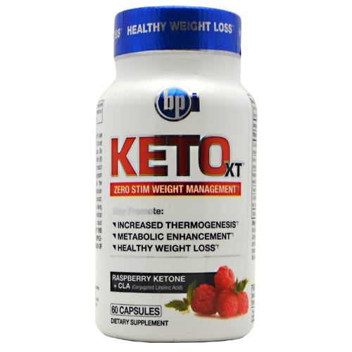

Información de Keto XT :
Keto XT es una fórmula de pérdida de peso de gran alcance basado en varios ingredientes clínicamente
investigados y probados. Contiene una mezcla avanzada de la cetona de frambuesa, grano de café verde, CLA
(ácido linoleico conjugado) y L-carnitina para ayudar a quemar grasa y promueve la pérdida de peso. Keto XT
contiene ingredientes naturales que han sido recientemente promocionados en las noticias como componentes de
la central eléctrica de pérdida de peso. Keto XT contiene granos de café verde, un extraordinario ingrediente
de control de peso que es una rica fuente natural de un compuesto aislado llamado ácido clorogénico, así como
compuestos de tipo ácido clorogénico estrechamente relacionadas. Los ingredientes en Keto XT pueden trabajar
sinérgicamente para aumentar el metabolismo, inhibe la absorción de grasa y reducir el aumento de peso.
Keto XT está diseñado para aumentar la termogénesis, la temperatura corporal y la tasa metabólica. Mediante
la estimulación de estas funciones básicas que aceleran los mecanismos naturales del cuerpo para quemar grasa,
Keto XT puede ser el complemento ideal para un programa de dieta y ejercicio saludable. Esto da a sus esfuerzos
para perder peso una ventaja extra, más allá de lo que puede lograr por golpear los pesos regularmente y hacer
cardio matutino cinco días a la semana. Keto XT tiene la sensación exclusiva de la tecnología, desde el
momento en que usted pone una cápsula Keto XT en la boca, literalmente, empezará a sentir sus efectos y
estará energizado para la pérdida de grasa.